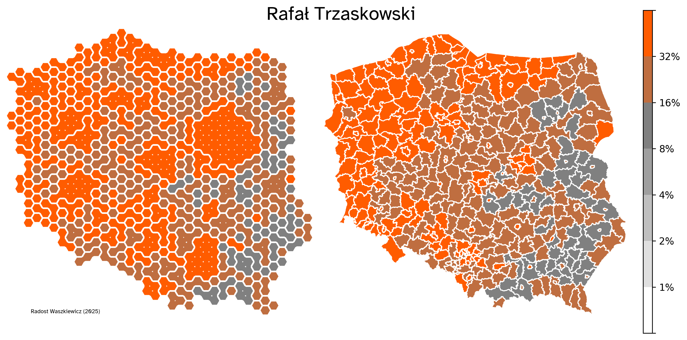

I've created a few maps showing the results of different candidates. Feel free to check out, among other things, how strongly urban the left-wing is and how Mentzen fills its place in the provinces. The division between Braun and Hołownia along the east-west axis is also interesting (here, the city-village split matters less).
The results by counties (powiat) are generally very interesting, but the typical presentation - coloring the county borders - obscures the picture: cities become microscopic, even though half of Poles live in them. That's why, on the left panel, I prepared a representation where the area corresponds to the population (one hexagon equals about 50,000 people).
